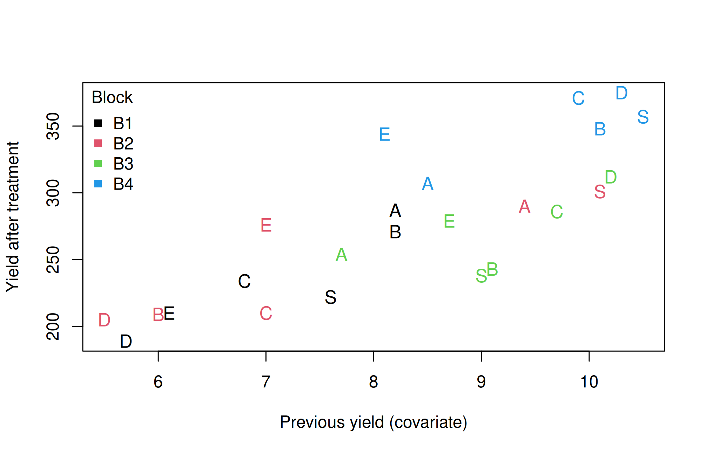

library(agridat)
apple <- pearce.apple
head(apple) block trt prev yield
1 B1 A 8.2 287
2 B1 B 8.2 271
3 B1 C 6.8 234
4 B1 D 5.7 189
5 B1 E 6.1 210
6 B1 S 7.6 222Explain when and why to use a covariate, fit an analysis of covariance, test the homogeneity of regression slopes, and compute and compare adjusted treatment means.
Sometimes part of the variation among experimental units can be measured but not controlled by blocking: the stand count of each plot, the initial weight of each animal, the yield of each tree before treatments were applied. Such a variable, measured on each unit and related to the response but not affected by the treatments, is called a covariate (concomitant variable).
Analysis of covariance (ANCOVA) combines ANOVA with regression. It
For an RCBD with one covariate \(x\):
\[y_{ij} = \mu + \tau_i + \beta_j + \gamma\,(x_{ij} - \bar x_{..}) + e_{ij}\]
where \(\gamma\) is the common regression coefficient of \(y\) on \(x\) within treatments and blocks. The adjusted treatment mean is
\[\bar y_{i(\text{adj})} = \bar y_{i.} - \hat\gamma\,(\bar x_{i.} - \bar x_{..})\]
In addition to the ANOVA assumptions:
Pearce (1953) reported an experiment on apple trees at East Malling with six soil-management treatments (A–E, and S, the standard practice of keeping the land clean in summer) in four blocks. The response is the crop yield after treatment, and the covariate is the yield of the same tree (number of boxes of fruit) in the four seasons before the treatments were applied. The data are pearce.apple in agridat.
library(agridat)
apple <- pearce.apple
head(apple) block trt prev yield
1 B1 A 8.2 287
2 B1 B 8.2 271
3 B1 C 6.8 234
4 B1 D 5.7 189
5 B1 E 6.1 210
6 B1 S 7.6 222Since the covariate was measured before the treatments, it cannot have been affected by them. A quick check confirms that it does not differ among treatments:
summary(aov(prev ~ block + trt, data = apple)) Df Sum Sq Mean Sq F value Pr(>F)
block 3 25.63 8.54 5.29 0.011 *
trt 5 7.39 1.48 0.92 0.497
Residuals 15 24.23 1.62
---
Signif. codes: 0 '***' 0.001 '**' 0.01 '*' 0.05 '.' 0.1 ' ' 1plot(yield ~ prev, data = apple, pch = as.character(apple$trt),
col = as.integer(apple$block), cex = 1.1,
xlab = "Previous yield (covariate)", ylab = "Yield after treatment")
legend("topleft", legend = levels(apple$block), col = 1:4, pch = 15,
title = "Block", bty = "n")
The plot shows a strong linear relationship between previous and current yield: trees that cropped well before the treatments also cropped well afterwards.
summary(aov(yield ~ block + trt, data = apple)) Df Sum Sq Mean Sq F value Pr(>F)
block 3 47853 15951 10.2 0.00065 ***
trt 5 750 150 0.1 0.99146
Residuals 15 23432 1562
---
Signif. codes: 0 '***' 0.001 '**' 0.01 '*' 0.05 '.' 0.1 ' ' 1Ignoring the covariate, the treatments appear to have no effect at all (\(F = 0.10\), \(p = 0.99\)), and the error mean square is 1562.
Add the covariate to the model before the treatment term, so that treatments are tested after adjustment for the covariate:
ancova <- aov(yield ~ block + prev + trt, data = apple)
summary(ancova) Df Sum Sq Mean Sq F value Pr(>F)
block 3 47853 15951 57.48 0.000000041 ***
prev 1 15944 15944 57.45 0.000002552 ***
trt 5 4353 871 3.14 0.042 *
Residuals 14 3885 278
---
Signif. codes: 0 '***' 0.001 '**' 0.01 '*' 0.05 '.' 0.1 ' ' 1The covariate is highly significant, and after adjusting for it the treatments differ significantly (\(F = 3.14\), \(p = 0.042\)). The error mean square has fallen from 1562 to 278: the covariate explained most of the variation that was previously treated as error. Precision is greatly improved:
EMS_anova <- deviance(aov(yield ~ block + trt, data = apple)) / 15
EMS_ancova <- deviance(ancova) / df.residual(ancova)
EMS_anova / EMS_ancova # approximate relative efficiency of ANCOVA[1] 5.629Because sequential sums of squares depend on the order of terms, it is good practice to check the result with Type II sums of squares from the car package, in which each term is adjusted for all others:
library(car)Loading required package: carDataAnova(lm(yield ~ block + prev + trt, data = apple), type = 2)Anova Table (Type II tests)
Response: yield
Sum Sq Df F value Pr(>F)
block 13258 3 15.92 0.00008638 ***
prev 19547 1 70.44 0.00000078 ***
trt 4353 5 3.14 0.042 *
Residuals 3885 14
---
Signif. codes: 0 '***' 0.001 '**' 0.01 '*' 0.05 '.' 0.1 ' ' 1coef(ancova)["prev"]prev
28.4 Within blocks and treatments, each additional box of fruit in the earlier seasons is associated with 28.4 units of additional yield after treatment.
The assumption of a common slope is tested by adding the treatment × covariate interaction:
anova(lm(yield ~ block + prev + trt, data = apple),
lm(yield ~ block + prev * trt, data = apple))Analysis of Variance Table
Model 1: yield ~ block + prev + trt
Model 2: yield ~ block + prev * trt
Res.Df RSS Df Sum of Sq F Pr(>F)
1 14 3885
2 9 1776 5 2109 2.14 0.15The interaction is not significant (\(p = 0.15\)), so a common slope is acceptable.
Adjusted means (also called least-squares means) are computed with emmeans, at the overall mean of the covariate:
library(emmeans)Welcome to emmeans.
Caution: You lose important information if you filter this package's results.
See '? untidy'adj <- emmeans(ancova, ~ trt)
adj trt emmean SE df lower.CL upper.CL
A 280 8.34 14 263 298
B 267 8.33 14 249 284
C 274 8.33 14 256 292
D 281 8.43 14 263 299
E 301 8.79 14 282 320
S 251 8.98 14 232 271
Results are averaged over the levels of: block
Confidence level used: 0.95 data.frame(
unadjusted = tapply(apple$yield, apple$trt, mean),
covariate_mean = tapply(apple$prev, apple$trt, mean),
adjusted = summary(adj)$emmean
) unadjusted covariate_mean adjusted
A 284.5 8.450 280.5
B 267.8 8.350 266.6
C 275.2 8.350 274.1
D 270.2 7.925 281.1
E 277.2 7.475 300.9
S 279.5 9.300 251.3The adjustment changes the picture considerably. Treatment S was given trees with the highest previous yields (mean 9.3), so its unadjusted mean (279.5) flattered it; after adjustment it is the lowest (251). Treatment E had the trees with the lowest previous yields, and its adjusted mean is the highest.
Compare each treatment with the standard practice S using Dunnett’s test:
contrast(adj, method = "trt.vs.ctrl", ref = "S") contrast estimate SE df t.ratio p.value
A - S 29.1 12.1 14 2.403 0.1148
B - S 15.2 12.2 14 1.247 0.5993
C - S 22.7 12.2 14 1.862 0.2773
D - S 29.8 12.7 14 2.353 0.1253
E - S 49.6 13.3 14 3.728 0.0096
Results are averaged over the levels of: block
P value adjustment: dunnettx method for 5 tests After adjusting for previous cropping, treatment E outyielded the standard practice significantly (\(p < 0.01\)); the other treatments did not differ significantly from S.
Covariance analysis for missing plots. Before computers were common, ANCOVA with dummy covariates was used to estimate missing values in designed experiments. Today, simply fit the model to the available data with lm() or aov() and obtain adjusted means with emmeans.
Analysis of covariance for apple trees
Edit the code, then select Run R. The first run downloads R into your browser and may take a little time. Copy code lets you use the example in RStudio.
trt <- factor(rep(c("A", "B", "C", "D", "E", "S"), times = 4))
block <- factor(rep(paste0("B", 1:4), each = 6))
prev <- c(8.2, 8.2, 6.8, 5.7, 6.1, 7.6, 9.4, 6, 7, 5.5, 7, 10.1,
7.7, 9.1, 9.7, 10.2, 8.7, 9, 8.5, 10.1, 9.9, 10.3, 8.1, 10.5)
yield <- c(287, 271, 234, 189, 210, 222, 290, 209, 210, 205, 276, 301,
254, 243, 286, 312, 279, 238, 307, 348, 371, 375, 344, 357)
summary(aov(yield ~ block + trt)) # without the covariate
fit <- aov(yield ~ block + prev + trt) # with the covariate
summary(fit)
b <- coef(fit)["prev"]
adjusted <- tapply(yield, trt, mean) - b * (tapply(prev, trt, mean) - mean(prev))
round(cbind(unadjusted = tapply(yield, trt, mean), adjusted = adjusted), 1)Investigate. Why does treatment S fall from near the top to the bottom after adjustment? Look at its mean previous yield.
emmeans.ChickWeight data contain the weight of chicks on four diets over time. Using the weight at day 21 as the response and the weight at day 0 as a covariate, test whether the diets differ.R. A. Fisher introduced the analysis of covariance in the 1930s. S. C. Pearce’s experiments on apple trees at East Malling, used in this chapter, showed how much precision a pre-treatment covariate can add in perennial crops.
Answers are given at the end of the chapter.
car::Anova(type = 2) gives sums of squares adjusted for all other __________.Answers are given at the end of the chapter.
ANCOVA model for an RCBD:
\[ y_{ij} = \mu + \tau_i + \beta_j + \gamma(x_{ij} - \bar x_{..}) + e_{ij} \tag{24.1}\]
Adjusted treatment mean:
\[ \bar y_{i(\text{adj})} = \bar y_{i.} - \hat\gamma(\bar x_{i.} - \bar x_{..}) \tag{24.2}\]
emmeans.1. treatments 2. regression 3. before 4. slope 5. covariate 6. mean 7. emmeans() 8. terms